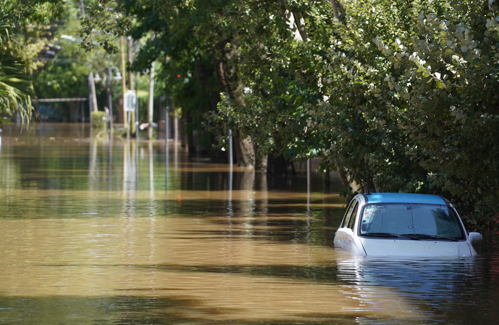

Emosson est un site visant à prévenir et informer les particuliers sur les risques d'inondation liés à leur logement. Pour cela, nous utilisons des données géographiques pour calculer un score de vulnérablité. Vous retrouverez également des recommandations et des indications dans votre fiche personnalisée à l'issus du questionnaire.
Fournir un score de vulnérabilité qui vulgarise, pour chaque personne qui le souhaite, le niveau d'exposition de son logement au risque inondation. Inciter chacun à adopter une culture du risque et à prendre les mesures adéquates.

Comment réaliser son auto-diagnostic ? Clique sur le bouton en haut de page et réponds au questionnaire !